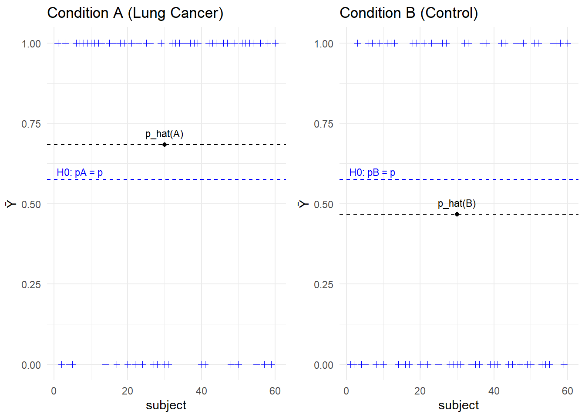
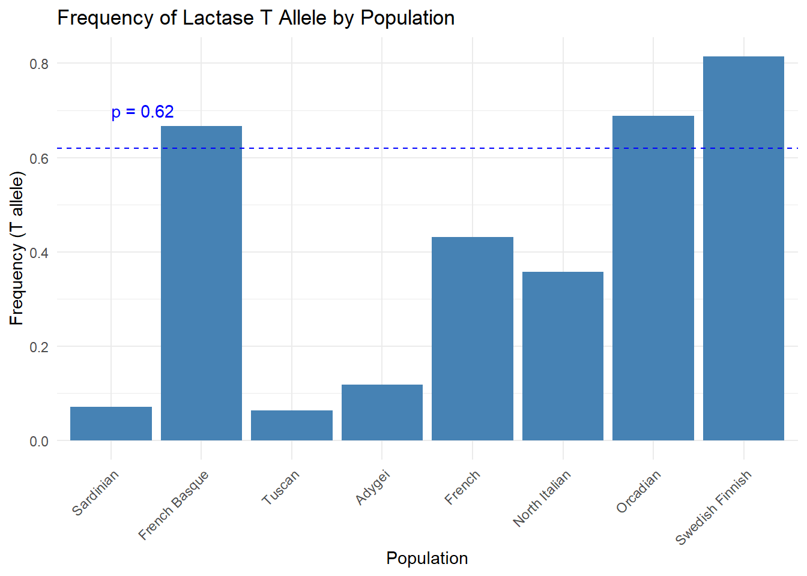
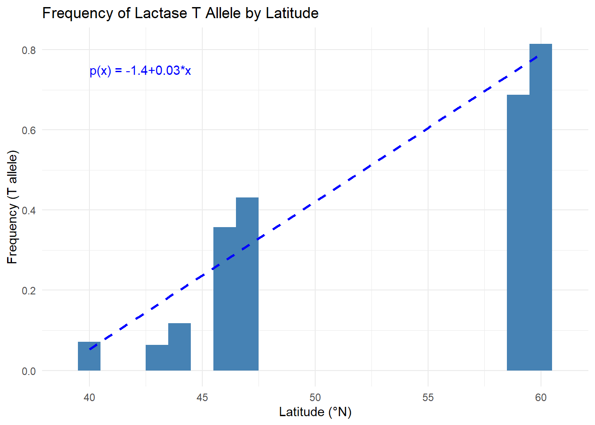

Chapter 15 Contingency tables
Our aim is often to compare the estimate of a parameter—describing a property of a random experiment—to a reference value. This reference value defines the probability distribution of the experiment under previously known or established conditions. If we change the conditions of the experiment to improve that property, our goal is to demonstrate that the new estimate is significantly different from the reference. On the other hand, if we aim to validate the reference by repeating the experiment under the same conditions, our goal is to show that the estimate remains close to the reference value.
In either case, the reference must be known without uncertainty prior to the experiment. Reference values can sometimes be derived unambiguously from theoretical considerations. For example, Mendel’s 0.75 probability that the offspring of hybrid pea plants produce round seeds is supported by a theoretical genetic model. When no such model exists—for instance, in the case of the mass-to-charge ratio of the electron—then a reference may be based on a gold standard established by highly accurate previous measurements.
But what can we do when no such reference value exists for the null hypothesis? Suppose we only know the two different conditions we want to compare. Gosset’s experiment on testing the soporific effects of two structural configurations of the same molecule provides a solution. He proposed using the same individual to test both variants, and measuring the difference in effect. The reference value then becomes the null difference in soporific effect between the two molecular structures across individuals.
A further complication arises in experiments where each specimen (or experimental unit) can only be tested under a single condition. In such cases, two independent samples must be taken—one per condition. Equivalently, each trial of the random experiment produces two measurements: one of the outcome, and one of the condition. Here, the null hypothesis is formulated as the statistical independence between the outcome and the conditions.
In this chapter, we will examine how to test for statistical independence between a random variable with discrete outcomes and two or more conditions of the experiment. We will use the contingency table of conditional probabilities to define the null hypothesis, and test it using the chi-squared \(\chi^2\) statistic. We will also introduce Fisher’s exact test, especially useful when sample sizes are small. We will illustrate both methods using historical data: the link between smoking and lung cancer, and the effect of natural selection on humans through changes in the frequency of the lactase persistence mutation.
Finally, when the goal is to test whether observed relative frequencies match those expected from a theoretical model, the \(\chi^2\) test can also be applied. We will illustrate this important use in the linear dependence of the lactase mutation with the latitude of European human populations.
15.1 Difference between proportions
Example (Smoking and Lung Cancer)
In 1950 Doll and Hill established smoking as a potential cause of lung cancer (Doll and Hill 1950). Before them, smoking was not considered as a potential cause of the increasing incidence in lung cancer. The study became a template in epidemiological studies and help to change the public view on the use of tobacco. The control measures that came decades later, based of scientific evidence encourage by this work, helped to save millions of lives.
Doll and Hill took a sample of lung cancer patients and controls and recorded whether they were smokers or not. We can imagine that the random sample of the smoking status (yes:1, no:0) for the lung cancer patients
1, 0, 0, 1, 0, … 0
where the first patient was a smoker and and the last one was not.
Smoking status is a Bernoulli trial \(Y\) with outcomes \((0, 1)\) and has a probability mass function
\[Y_A \sim Bernoulli (p_A)\] The parameter \(p_A\) is the probability of smoking under the lung cancer condition \(A\).
We also write down the smoking status of a patient who is a control (non-smoker), and observe
0, 0, 1, 0, 0, … 1
Smoking status is a Bernoulli trial with probability \(p_B\)
\[Y_B \sim Bernoulli (p_B)\] The parameter \(p_B\) is the probability of smoking under the control condition \(B\).
15.2 Difference between proportions
In this study one random experiment has a two-value outcome: (smoking status, diagnosis). That is the observation of a patient is determined by two variables both of which are categorical
These are the possible outcomes of each variable:
- Smoking \(\in\{yes, no\}\)
- Cancer diagnosis \(\in \{A:cancer,B:control\}\)
Repeating the experiment \(n\) times, the data matrix for the patients would look like
\[ \begin{array}{ccc} \mathbf{Individual} & \mathbf{Condition} & \mathbf{Outcome} \\ c_1 & \text{A} & \text{1} \\ c_2 & \text{A} & \text{0} \\ c_3 & \text{A} & \text{1} \\ \vdots & \vdots & \vdots \\ c_{n-2} & \text{B} & \text{1} \\ c_{n-1} & \text{B} & \text{1} \\ c_{n}& \text{B} & \text{1} \\ \end{array} \]
The first patient was diagnosed for lung cancer and was a smoker.
Question:
Our research question is to find whether the outcome and the condition are statistically dependent variables. We want to know if the probability of smoking is higher in lung cancer patients than in controls.
15.3 Contingency table of conditional probabilities
Our experiment is such that we make diagnosis conditioned to the exposure. We then have the conditional probability table
\[ \begin{array}{cc|c} & \mathbf{A:cancer} & \mathbf{B:control} \\ \mathbf{smoking: yes} & P(yes \mid A) & P(yes \mid B) \\ \mathbf{smoking: no} & P(no \mid A) & P(no \mid B) \\ \mathbf{sum} & 1 & 1 \end{array} \]
We want to know if the probability of smoking in condition \(A\) is different from the probability of smoking in condition \(B\), and therefore the hypothesis contrast is
- \(H_0: p_A=p_B\), no differences of smoking between cases and controls.
- \(H_1: p_A\neq p_B\), the probabilities of smoking are different between cases and controls.
15.4 Test for the difference between proportions
If we consider that the null hypothesis is true, then the cancer tag (“A” or “B”) is statistically independent from whether an individual in the study was a smoker or not. Remember the definition of statistical independence: if smoking is independent from diagnosis status \[p=P(yes)=P(yes|A)=P(yes|B)\] Therefore the hypothesis contrast can be written as:
- \(H_0: p=p_A=p_B\)
- \(H_1: p\neq p_A \neq p_B\)
We do not know the values of \(p\), \(p_A\) and \(p_B\). Therefore we need to estimate them from the data.
Example (Smoking and Lung Cancer)
Doll and Hill reported the following observations for females in their study:
They included \(n_A=60\) cancer patients and observed \(41\) smokers.
They included \(n_B=60\) controls and observed \(28\) smokers.
For long cancer patients (\(A\)), we have that the estimated probability of smoking is the relative frequency of smokers, that is
- \(\bar{y}_A=\hat{p}_A=41/60=0.68\)
Likewise, for controls (\(B\)), we have that the estimated probability of smoking is
- \(\bar{y}_B=\hat{p}_B=28/60=0.47\)
If the null hypothesis is true then the overall probability of smoking \(p\) can be estimated from either condition, or from both of them taken together, as if they all had the same diagnosis:
\[\hat{p}=\frac{n_A\hat{p}_A+n_B\hat{p}_B}{n_A+n_B}=\frac{41+28}{60+60}=0.575\] And \(\hat{p}\) is called the pooled proportion, an estimate of the marginal probability of smoking \(p\).
15.5 \(\chi^2\) test
The standardized error that we make when we estimate the pooled probability \(\hat{p}\) with the relative frequency of smokers using the lung cancer patients only is
\[Z_A= \frac{\bar{Y}_A-\hat{p}}{\sqrt\frac{\hat{p}(1-\hat{p})}{n_A}}\]
Remember that one observation of \(\bar{Y}_A\) is what we call \(\hat{p}_A\), an estimate of the conditional probability of smoking if receiving a cancer diagnosis. Likewise for condition \(B\), the error made in using controls only (\(B\)) to estimate the pooled proportion is
\[Z_B= \frac{\bar{Y}_B-\hat{p}}{\sqrt\frac{\hat{p}(1-\hat{p})}{n_B}}\]

In the plot, each cross is a smoker (either \(1\) or \(0\)) the dotted line is the estimated probability \(\hat{p}\) of all subjects taken together (the pooled proportion) and the dots are the estimated probabilities of smoking in the lung cancer patients (\(A\)) and controls (\(B\)).
The conditional probability table by cancer and control condition is
\[ \begin{array}{cc|c} & \mathbf{A:cancer} & \mathbf{B:control} \\ \mathbf{smoking: yes} & 0.68 & 0.47 \\ \mathbf{smoking: no} & 0.32 & 0.53 \\ \mathbf{sum} & 1 & 1 \end{array} \]
Which we can illustrate in a barplot

The probabilities of smoking within each diagnosis are different but look similar. Is the difference significant? Can we reject the null hypothesis taking into account the variation on the frequencies about the pooled proportion?
Using the CLT, the total standardized squared error of estimating the proportion of smoking using each condition separately is the sum of the errors
\[W= Z_A^2+Z_B^2\sim \chi^2(1)\]
which is a random variable that follows a \(\chi^2\) distribution with 1 degree of freedom. If the null hypothesis is true, we can use any condition to estimate the pool proportion.
Using the marginals
We formulated the null hypothesis from the statistical independence given by conditional probabilities. Another alternative is to formulate it from the product of the marginals.
Therefore, the hypothesis test can also be written as
- \(H_0:P(yes, A)=P(yes)P(A)\). Cancer diagnosis and smoking are statistically independent as the joint probability is the product of the marginals.
- \(H_1:P(yes, A)\neq P(yes)P(A)\). Cancer diagnosis and smoking are statistically dependent.
If diagnosis and smoking status are truly independent from each other then one can show that the variable \(W\) above can also be computed as the sum of the squared errors that we make when we estimate the joint probabilities using the marginals (i.e. \(\hat{P}(yes,A)=\hat{p}\hat{P}(A)\)), which we can if the null hypothesis is true. Therefore, the total standardized squared error of before can be re-written as:
\[W= \sum_{j\in\{yes,no\}} \sum_{i\in\{A,B\}} \frac{(O_{i,j} - E_{i,j})^2}{E_{i,j}}\] where, for instance, \(O_{yes, A}=\hat{P}(yes,A)\) is the observed joint frequency of smoking and lung cancer, and \(E_{yes, A}=\hat{P}(yes)\hat{P}(A)\) is the expected frequency derived from the product of the marginals. From the joint probability table this statistics is the sum of the squared differences between the cells in the table and the products of the marginals, and easy to compute.
If the observed value for \(W\) is a large, its probability under the null hypothesis is low, and we then may reject this hypothesis. The value of \(W\) is exactly the same however we compute it.
Example (Smoking and Lung Cancer)
When we compute the observed value of \(W\), using the first form, we find
\(w_{obs}= \frac{(\hat{p}_A-\hat{p})^2}{\frac{\hat{p}(1-\hat{p})}{n_A}} +\frac{(\hat{p}_B-\hat{p})^2}{\frac{\hat{p}(1-\hat{p})}{n_B}}\) \[=\frac{(0.6833-0.575)^2}{{\frac{0.575(1-0.575)}{60}}}+ \frac{(0.4666-0.575)^2}{{\frac{0.575(1-0.575)}{60}}}= 5.76\]
In terms of the expected value of \(W\) (\(E(W)=1\) -degrees of freedom) when we make no mistake) the null hypothesis is rewritten:
\(H_0:w=1\). Lung cancer and smoking are statistically independent and the error in the estimation of the pooled proportion is low using each condition separately.
\(H_1:w>1\). Lung cancer and smoking are statistically dependent and the error in the estimation of the pooled proportion is high using each condition separately.
We can test whether this value is large under the null hypothesis. If the null is true this statistics is close to zero, otherwise is large. We can then compute the \(pvalue\) given by
\[pvalue=P(W \geq w_{obs}) =0.016\]
Pyhton:
chi2.sf(5.76, 1)
R:
pchisq(5.76, 1, lower.tail = FALSE)This \(pvalue\) is not lower than the significance level \(\alpha=0.05\) and therefore Doll and Hill reject \(H_0\), and concluded that
the frequencies of smoking are different between cancer patients and controls,
or, equivalently, that the frequency of smoking statistically depends from patient diagnosis,
or, equivalently, that the frequency of smoking is significantly associated lung cancer diagnosis.
The analysis can be done with the following code, with the contingency table for the absolute frequencies.
import numpy as np
from scipy.stats import chi2_contingency
observed = np.array([[19, 32], [41, 28]])
chi2, p, dof, expected = chi2_contingency(observed, correction=False)
print(f"Chi-squared statistic: {chi2:.4f}")
print(f"P-value: {p:.4f}")
R:
conttable <- cbind(c(19, 32),c(41,28))
chisq.test(conttable, correct = FALSE)The analysis presented here was only one of the evidences of the effect of smoking and cancer. Doll and Hill had to argue against the possibility that lung cancer patients started to smoke after diagnosis (reverse causation) and show that the size of the effect depended on the amount of cigarettes smokes (dose response). Hill famously listed 9 criteria to help support a causal relationship underlying a statistical association (Hill 1965).
15.6 Fisher’s exact test
Another approach is Fisher’s exact test. When the conditions of the CLT break, often when one of the cells in the contingency table is very small, or the relative frequencies are close to 1 or 0, then the \(\chi^2\) test cannot be applied.
Example(Smoking and Lung Cancer in Males)
Doll and Hill also reported the following observations for males in their study:
They included \(n_A=649\) cancer patients and observed \(647\) smokers. Only \(2\) where non-smokers.
They included \(n_B=649\) controls and observed \(622\) smokers. \(27\) were non-smokers.
The hypothesis contrast is
- \(H_0: p_A \leq 1269/1298=0.977\)
For cancer patients (condition \(A\)) the probability of smoking is at most the same as in the patients and controls together.
- \(H_1: p_A < 1269/1298=0.977\)
The alternative hypothesis assumes that the probability of smoking in cancer patients \(A\) is higher than for all subjects together, indicating that there is an increase in the number of smokers in the cancer patients. The observed frequency of smokers in lung cancer is \(\hat{p}_A=647/649=0.997\), but is it statistically significant greater than \(0.977\)?
Smoking was widely spread among males in the 50’s. To test the statistical association under this conditions where the CLT does not hold then we use Fisher’s exact test.
15.7 Hypergeometric distribution
Take a ballot for each of the \(N=1298\) patients and controls into an urn:
There are a total of \(N\) ballots:
- There are \(K=1269\) ballots marked as smokers
- \(N-K=29\) ballots marked as not smokers.
Then, if we take a \(n=649\) randomly selected ballots (similar in number to lung cancer patients), we may ask: What is the probability of observing more than \(647\) patients who are smokers?
The probability of obtaining \(Y\) smokers in a sample of \(n\) drawn from a population of \(N\) where \(K\) are smokers is
\(P(Y=y)=P(one\,sample) \times (Number\, of\, ways\, of\, obtaining\, x)\)
\[=\frac{1}{\binom N n}\binom K y \binom {N-K} {n-y}\] Therefore, \(Y\) follows a hypergeometric distribution \[Y \sim Hypergeometric(N,K,n)\]

Remember that \(647\) smokers were actually observed. Therefore, we are asking how rare that observation is in the case where diagnosis conditioning plays no role, or that cases and controls come from the same urn. For this probabilistic model, we compute the probability \(P(Y>647)\), or put simply the \(pvalue\).
If the observed value for \(y_{obs}=647\) is a rare high observation for the null hypothesis, we then reject the probabilistic urn model for the null. The upper tail \(pvalue\) for an observation \(647\) is
\[pvalue=P(Y > 647)= 1- F_{hyper(N,K,n)}(647) = 0.00000064\] In Python and R
from scipy.stats import hypergeom
1-hypergeom.cdf(18, 600, 64, 200)
R:
1-phyper(646, 1269, 29, 649)Which is lower than the significance level \(\alpha=0.05\) and therefore we also reject \(H_0\) for males and conclude:
- that the frequency of smoking is significantly associated with cancer diagnosis also in males.
The odds ratio gives us the strength of the of the change in the in the smoker proportion between controls and lung cancer:
\[OR=\frac{p_A/(1-p_A)}{p_B/(1-p_B)}=14.04\]
It is a magnitude of the observed statistical association between smoking and lung cancer. We use the \(OR\) to distinguish between the different cases
- When \(p_A\) is equal to \(p_B\) then \(OR=1\) (independence of smoking and lung cancer)
- When \(p_A\) is lower than \(p_B\) then \(OR<1\)
- When \(p_A\) is greater than \(p_B\) then \(OR>1\)
We say that for an \(OR=14\) in the case of the smoking, there was an increase of \(14\)-fold on the risk of cancer due to smoking.
Python:
import numpy as np
from scipy.stats import fisher_exact
observed = np.array([[27, 622], [2, 647]])
odds_ratio, p_value = fisher_exact(observed, alternative="greater")
print(f"Odds ratio: {odds_ratio:.4f}")
print(f"P-value: {p_value:.4f}")
R:
matrix <- cbind(c(27, 622),c(2, 647))
fisher.test(matrix, alternative = "greater")15.8 Difference between several proportions
We would also like to to know if the outcome of a random experiment may vary across multiple condition.
We then formulate the hypothesis contrast:
- \(H_0: p=p_A=p_B,...=p_M\)
The null hypothesis assumes that conditions (\(i=\{A,B,... ,M\}\)) and the outcome (\(j=\{1,0\}\)) are all independent and then they have the same probability of the outcome \(j=1\).
- \(H_1:\) at least for one \(i\), \(p\neq p_i\)
The alternative hypothesis assumes that the outcome is statistical independent from at least one condition.
For deciding between hypothesis, we use the the so called \(\chi^2\)-test for the homogeneity between conditions.
Example (Selection of the Lactase Mutant)
En el 2004 Bersaglieri et al (Bersaglieri et al. 2004) showed that the the human populations have been under the selection of the lactase alelle –13910*T in which a citocine was replaced by a tiamine in the DNA sequence of the lactase gene LCT. The change of a nucleotide at the given position gave the carriers tactate tolerance, promoting herding 5000–10000 years ago. Here are the number of chromosomes observed for each population and the allele frequencies (in a transposed contingency table) that they reported on eight European populations only
\[ \small \begin{array}{c|c|ccc} \textbf{Population} & \textbf{Chromosomes (n)} & \textbf{lactase (T)} & \textbf{lactase (C)} & \textbf{sum} \\ \hline \textbf{Sardinian} & 56 & 0.071 & 0.929 & 1 \\ \textbf{French Basque} & 48 & 0.667 & 0.333 & 1 \\ \textbf{Tuscan} & 16 & 0.063 & 0.937 & 1 \\ \textbf{Adygei} & 34 & 0.118 & 0.882 & 1 \\ \textbf{French} & 58 & 0.431 & 0.569 & 1 \\ \textbf{North Italian} & 28 & 0.357 & 0.643 & 1 \\ \textbf{Orcadian} & 32 & 0.688 & 0.312 & 1 \\ \textbf{Swedish Finnish} & 360 & 0.815 & 0.185 & 1 \\ \end{array} \]
We have that the standardized squared error from the null hypothesis can be written as:
\[W= Z_A^2+Z_B^2+Z_C^2+Z_D^2+Z_E^2+Z_F^2+Z_G^2+Z_H^2\sim \chi^2(8-1)\]
which is a random variable that follows a \(\chi^2\) distribution with \(7=8-1\) degrees of freedom (number of populations \(-1\)).
Each term in \(W\) is the squared standardized error observed when we estimate the pooled proportion of the mutant allele \(\hat{p}\) using each population separately.
The estimated probability of the mutant allele in all populations together is the pooled proportion
\(\hat{p}=\frac{n_A\hat{p}_A+n_B\hat{p}_B+n_C\hat{p}_C+n_D\hat{p}_D+n_E\hat{p}_E+n_F\hat{p}_F+n_G\hat{p}_G+n_H\hat{p}_H}{n_A+n_B+n_C+n_D+n_E+n_F+n_G+n_H}\) \[=0.62\]
and the computation of the observed \(W\) is \[w_{obs}=204.28\]
We can now test how rare this observation is under the null hypothesis that all the probabilities of the mutant allele across the populations are equal (i.e. homogeneous). We compute the \(pvalue\)
\[pvalue=P(W \geq w_{obs}) =1-F_{\chi^2(7)}(204.28)= 1.0\times 10^{-40}\]
The observed \(\chi^2\) statistic and the corresponding \(pvalue\) can be obtained in Python and R with the following code:
import numpy as np
from scipy.stats import chi2_contingency
observed = np.array([[4, 32, 1, 4, 25, 10, 22, 293 ],
[52, 16, 15, 30, 33, 18, 10, 67]])
chi2_stat, p_value, dof, expected = chi2_contingency(observed)
print(f"Chi-squared statistic: {chi2_stat:.4f}")
print(f"P-value: {p_value:.4f}")
print(f"Degrees of freedom: {dof}")
R:
observed <- rbind(c(4, 32, 1, 4, 25, 10, 22, 293),
c(52, 16, 15, 30, 33, 18, 10, 67))
chisq.test(observed)where the \(\chi^2\)-test is computed with the number of chromosomes observed for each allele and population. That is the product of the total number of chromosomes in each population and their relative frequencies.
We see that the \(pvalue\) is much lower than the significance level \(\alpha=0.05\) and therefore we reject \(H_0\) and conclude that: The frequency of the T allele of the LCT gene is significantly associated the differences in the European populations, providing evidence for an underlying selection of lactate tolerance.
We can illustrate the result a conditional frequency table by European population or with a bar plot.

The \(\chi^2\)-test tests the homogeneity of all the proportions of the mutant allele across the populations in relation to the overall mutant frequency \(\hat{p}=0.62\). Note that the pooled proportion takes into account the number of individuals in each population. As the Swedish are the population that contribute the most to the pooled proportion, it strongly leans toward this population.
In the figure showing the frequency of the lactase mutant across European populations, we have ordered the populations according their South-North latitude. We see that, except for the French Basque, the frequency increases with latitude. This remark supports the hypothesis that lactase persistence has been favored by positive selection in high-latitude regions of Europe, where sunlight is scarce and the synthesis of vitamin D is limited. In these environments, milk consumption provided a valuable source of calcium and vitamin D, both important for maintaining bone health. How can provide further evidence of this observation?
15.9 Goodness of fit
A key insight of the \(\chi^2\) test is to realize that the overall proportion offers a model to the entire data. If we split the data into categories (conditions), each of them can be used to estimate the overall proportion \(p\). If the model is a good fit to the data, the estimate from each category will fall close to the proportion, distributing around its value as a normal variable. A good fit means low accumulated error from all the estimates and, therefore, a low value of the observed \(\chi^2\)-statistic, \(w_{obs}\).
Under this perspective, the \(pvalue\) offers a measure of how good the data fits the null hypothesis. If it is large, we say that the data fits the null probability model, if it is small then the null probability model is not a good model for the data.
Example (Selection of the Lactase Mutant)
In the figure showing the frequency of the lactase mutant across European populations, we have ordered the populations according their South-North latitude. We see that, except for the French Basque, the frequency increases with latitude. The constant overall proportion \(\hat{p}=0.62\) does not appear to be a good fit across the populations. The \(\chi^2\)-test gave a very low \(pvalue\) and therefore, we discard that the null hypothesis is a suitable probabilistic model for the entire data.
How can we improve the model?
An option is to plot the bars at the estimated latitudes for each population (\(i\)) and make the proportion \(p=p(x_i)\) depend of the latitude \(x_i\) as a linear function
\[p(x_i)=\alpha+\beta\times x_i\]
instead of being equal for all the populations. We may leave the French basques out because of their high frequency that could be due to a combination of genetic isolation, cultural continuity, and historical reliance on pastoralism.
A popular method to estimate \(\alpha\) and \(\beta\) is to find the values that minimize the squared differences between the observed frequency \(\hat{p}_i\) and its expected value by the latitude model \(\hat{p}(x_i)\)
\[Q(\alpha, \beta)= \sum_{i=1}^{M} (\hat{p}_i -\hat{p}(x_i))^2\] where \(M\) are the number of conditions (population). The values \(\hat{\alpha}\) and \(\hat{\beta}\) minimize the sum of squares \(Q\).

As such the error of the estimates to the new line are
\[Z_i= \frac{\bar{Y}_i-\hat{p}(x_i)}{\sqrt\frac{\hat{p}(x_i)(1-\hat{p}(x_i))}{n_i}}\]
each evaluated at their own latitude \(\hat{p}(x_i)\). If we sum all the errors we have
\[W= \sum_{i=1}^{M} Z^2 \sim\chi^2(M-2)\] This statistic distributes as \(\chi^2\) with \(M-2\) degrees of freedom, and we can use it to measure the goodness of fit of the model to the data. The model has two parameters that reduce the degrees of freedom of the statistic. Each term, assumes that the error from the condition \(i\) is a standard normal variable.
\[ \small \begin{array}{c|c|cc} \textbf{Population} & \textbf{Chromosomes (n)} & \textbf{Observed: } \hat{p}_i & \textbf{Expected: } \hat{p}(x_i) \\ \hline \textbf{Sardinian} & 56 & 0.071 & 0.053\\ \textbf{Tuscan} & 16 & 0.063 & 0.163\\ \textbf{Adygei} & 34 & 0.118 & 0.200\\ \textbf{French} & 58 & 0.431 & 0.311\\ \textbf{North Italian} & 28 & 0.357 & 0.274 \\ \textbf{Orcadian} & 32 & 0.688 & 0.752\\ \textbf{Swedish Finnish} & 360 & 0.789 & 0.185\\ \end{array} \]
We see for our lactase example that the observed statistic, computed from the table, is
\(w_{obs}=\sum_{i=1}^M Z_i^2= \sum_{i=1}^M \frac{(\hat{p}_i-\hat{p}(x_i))^2}{\frac{\hat{p}(x_i)(1-\hat{p}(x_i))}{n_i}}\) \[=10.01\]
with \(7-2\) degrees of freedom (removing the Basques). The p-value is \(pvalue=0.07\), indicating that the linear is consistent with the data. We typically accept suitable fits to the data that have \(pvalue>0.05\). We thus offer additional evidence to show that the lack of homogeneity of the frequencies may be explained by the changes the environment that go along with different latitudes.
The \(\chi^2\)-test is a general goodness of fit test for curve fitting. The expected value of an outcome at a point \(x\) can be derived from fully theoretical models and compared against the observed data that is assumed to distribute normally about its theoretical value.
15.10 Questions
1) The \(\chi^2\) test for contingency table is used to
\(\qquad\)a: test the associations of a categorial variable; \(\qquad\)b: test statistical independence between two categorical variables; \(\qquad\)c: test statistical independence between a continuous and a categorical variable; \(\qquad\)d: test significance of a categorial variable
2) In the Fisher test we compute the \(pvalue\) using
\(\qquad\)a: the central limit theorem; \(\qquad\)b: a conditional probability; \(\qquad\)c: the relative frequencies; \(\qquad\)d: a parametric model
3) The probability to heal from an injury without treatment is 0.6. The probability to heal from an injury with treatment is 0.8. What is the odd ratio of healing with treatment with respect of healing without it.
\(\qquad\)a: 0.376; \(\qquad\)b: 1.5; \(\qquad\)c: 2.666; \(\qquad\)d: 0.6666
4) The null hypothesis in testing for differences in proportions across different conditions assume
\(\qquad\)a: different conditions for different proportions;
\(\qquad\)b: the same condition across different proportion;
\(\qquad\)c: different proportions across the conditions;
\(\qquad\)d: the same proportion across the conditions
5) if the \(pvalue\) is lower than \(0.05\) in a test of several proportions then
\(\qquad\)a: we accept that at least one proportion is different from the rest; \(\qquad\)b: We accept that all proportions are different between each other; \(\qquad\)c: We accept the all proportions are equal; \(\qquad\)d: We accept that there is one single proportion
15.11 Practice
Load hospital data (https://alejandro-isglobal.github.io/SDA/data/hospital.txt)
Test the hypothesis that the infection proportion at hospitals C and D are different. Use a \(\chi^2\) test and a exact Fisher test. Interpret the OR.
Make a bar plot
Test the hypothesis that the infection proportion at hospitals A, B and E are different.
Make a bar plot